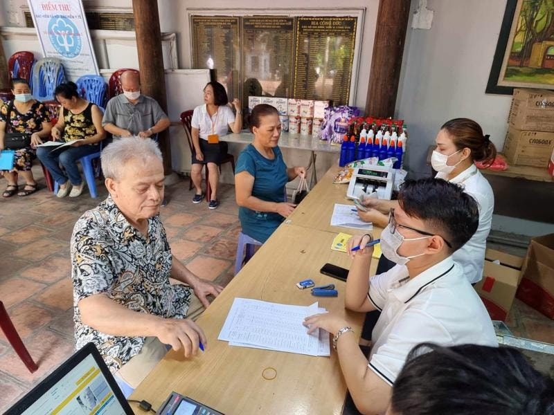

Hỗ trợ chi phí mai táng theo Nghị định 176/2025/NĐ-CP quy định chi tiết và hướng dẫn thi hành về đối tượng và điều kiện hưởng trợ cấp hưu trí xã hội có hiệu lực từ ngày 01/7/2025
Theo điều 5 của Nghị định 176/2025/NĐ-CP thì:
1. Đối tượng đang hường trợ cấp hưu trí xã hội hoặc người đã có văn bản đề nghị hưởng trợ cấp hưu trí xã hội, đủ điều kiện hưởng nhưng Chủ tịch Ủy ban nhân dân cấp xã chưa ban hành quyết định hường trợ cấp hưu trí xã hội khi chết thì được hỗ trợ chi phí mai táng theo mức quy định tại khoản 2 Điều 11 Nghị định số 20/2021/NĐ-CP ngày 15 tháng 3 năm 2021 của Chính phủ quy định chính sách trợ giúp xã hội đối với đối tượng bảo trợ xã hội.
Điều 11. Hỗ trợ chi phí mai táng
Trong đó: khoản 2 Điều 11 Nghị định số 20/2021/NĐ-CP như sau:

Điều 11. Hỗ trợ chi phí mai táng
...
2. Mức hỗ trợ chi phí mai táng đối với đối tượng quy định tại khoản 1 Điều này tối thiểu bằng 20 lần mức chuẩn quy định tại khoản 2 Điều 4 Nghị định này. Trường hợp đối tượng quy định tại khoản 1 Điều này được hỗ trợ chi phí mai táng quy định tại nhiều văn bản khác nhau với các mức khác nhau thì chỉ được hưởng một mức cao nhất.
2. Trường hợp đối tượng quy định tại khoản 1 Điều này được hỗ trợ chi phí mai táng, mai táng phí quy định tại nhiều văn bản khác nhau với các mức khác nhau thì chỉ được hưởng một mức cao nhất.
3. Trình tự thực hiện hỗ trợ chi phí mai táng
a) Tổ chức, cá nhân lo mai táng cho đối tượng có Tờ khai đề nghị hỗ trợ chi phí mai táng theo Mẫu số 02 ban hành kèm theo Nghị định này gửi trực tiếp hoặc qua tổ chức bưu chính hoặc trên môi trường mạng đến Chủ tịch Ủy ban nhân dân cấp xã;
b) Trong thời hạn 03 ngày làm việc, kể từ ngày nhận đủ hồ sơ, Chủ tịch Ủy ban nhân dân cấp xã xem xét, quyết định hỗ trợ chi phí mai táng.
Mẫu số 02 - Tờ khai đề nghị hỗ trợ chi phí mai táng ban hành kèm theo Nghị định 176/2025/NĐ-CP như sau:
|
Mẫu số 02
CỘNG HÒA XÃ HỘI CHỦ NGHĨA VIỆT NAM Độc lập - Tự do - Hạnh phúc --------------- TỜ KHAI ĐỀ NGHỊ HỖ TRỢ CHI PHÍ MAI TÁNG Kính gửi: Chủ tịch Ủy ban nhân dân xã (phường, đặc khu) ……………… Họ, chữ đệm, tên: ................................................................................ Nơi cư trú: ................................................................................. Thẻ Căn cước hoặc số định danh cá nhân: ........................................ Quan hệ với người chết: ............................................................. Nội dung đề nghị: .......................................................................... 2. Thông tin người chết được tổ chức mai táng Họ, chữ đệm, tên: ................................................................... Ngày, tháng, năm sinh: ................................................................. Giới tính: ………………. Dân tộc: ………………. Quốc tịch: ..................... Nơi cư trú: .................................................................................... Thẻ Căn cước hoặc số định danh cá nhân: ........................................ Đã chết vào lúc: ………….. giờ ……….. phút, ngày 15 tháng 09 năm 2026 Nơi chết: ................................................................................ Nguyên nhân chết: ................................................................ Số Giấy báo tử/Giấy tờ thay thế Giấy báo tử: ……………… do: ..................... ………………………………… cấp ngày 15 tháng 09 năm 2026 3. Người, tổ chức lo mai táng nhận hỗ trợ chi phí mai táng 3.1. Trường hợp cá nhân, thân nhân đứng ra tổ chức mai táng: Họ và tên: ............................................................................ Ngày, tháng, năm sinh: …………………… Nam/Nữ: ..................... Thẻ Căn cước hoặc số định danh cá nhân: .................................... Nơi cư trú: ............................................................................. Quan hệ với người chết: ......................................................... Số điện thoại liên hệ: ................................................................. 3.2. Trường hợp cơ quan, tổ chức đứng ra tổ chức mai táng: Tên tổ chức: ............................................................ Địa chỉ: ................................................................................ Người đại diện theo pháp luật: ………………….. Chức vụ: ....................... Số điện thoại: ..................................................................... 4. Phương thức nhận chi phí hỗ trợ mai táng: □ Tài khoản ngân hàng: Tên chủ tài khoản: ........................................................ Số tài khoản: .............................................................. Ngân hàng: ............................................................................ □ Tiền mặt Tôi cam đoan những nội dung khai trên đây là đúng sự thật và chịu trách nhiệm trước pháp luật về nội dung khai của mình.
Ghi chú: (1) Nếu Tờ khai gửi điện tử thì người đề nghị không cần ký. |
----------------------------------------------------------------------------
Các bạn muốn tải (download) Mẫu số 02 - Tờ khai đề nghị hỗ trợ chi phí mai táng ban hành kèm theo Nghị định 176/2025/NĐ-CP trên đây về để tham khảo và sử dụng thì có thể gửi mail về địa chỉ mail: ketoandieutam@gmail.com => Kế Toán Diệu Tâm sẽ gửi lại Mẫu số 02 - Tờ khai đề nghị hỗ trợ chi phí mai táng ban hành kèm theo Nghị định 176/2025/NĐ-CP này cho các bạn
----------------------------------------------------------------------------